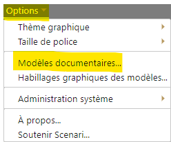

Installer Opale sur SCENARIchainNG-desktop
Si vous vous connectez au serveur de l'ULCO, le modèle Opale est déjà installé, cette procédure ne concerne que les utilisateurs de SCENARIchainNG-desktop.
Télécharger le WSPACK Opale
Télécharger WSPACK Opale à l'URL ci-dessous⚓
Les contenus téléchargeables OpaleWSPACK⚓
Le format WSPACK est le format d'importation des modèles dans Scenari
Applications autonomes⚓
Vous avez la possibilité de télécharger Opale en version autonome, vous pouvez ainsi travailler sans installer Scenari, le modèle documentaire devient alors un logiciel autonome de conception. Comme pour ScenariDesktop celà peut avoir une utilité si on veut travailler seul, mais à terme nous vous conseillons l'import dans Scenari surtout si vous décidez d'utiliser d'autres modèles à l'avenir.
AttentionMacOSX⚓
La version autonome d'Opale n'est pas compatible avec macOS 11 (Big Sur)
Ouvrir la fenêtre de paramétrage des Modèles documentaires
En haut à gauche, cliquez sur
OptionspuisModèles Documentaires⚓
Sélectionnez le WSPACK précédemment téléchargé
Opale apparait dans la liste des modèles